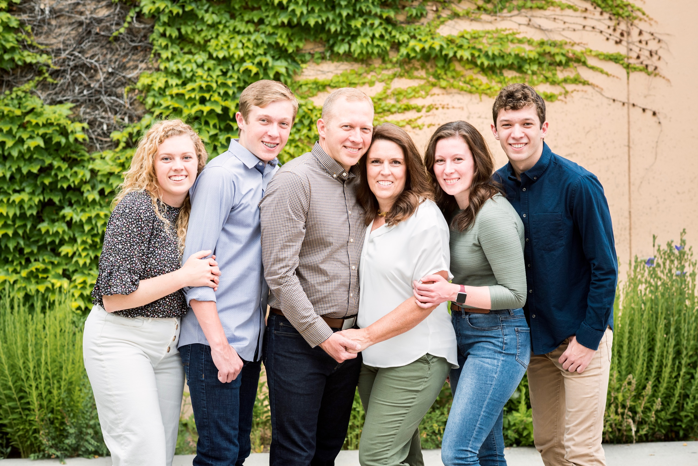
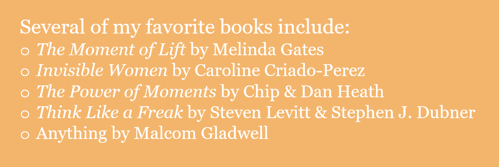

My name is Rebekah Breinholt and I’m an experience designer. What’s an experience designer? It’s someone who is attentive and intentional in organizing and orchestrating experiences. As the economy shifts from a service economy to an experience economy, good experiential design is becoming crucial for the survival of businesses. My natural strengths, combined with my study of Experience Design & Management at Brigham Young University make me uniquely capable to understand and meet customer needs through design.
 My Family.I love people. Growing up as the second of four children in Albuquerque, New Mexico, I always had to be creative to find fun pastimes for siblings, friends, and me. This has impacted me in several ways: First of all, I am a hobbyist. I love learning new skills and applying them to bring myself and others joy. Second, I’ve learned to be attentive to the personalities and interests of others to plan and morph activities to be enjoyable for everyone. Third, I’m a reader. I’ve always been drawn to books that provide facts and insights into human behavior. Basically, my light reading is what other people read for school assignments.
My BYU education has taught me to apply my creativity, empathy, and need to understand others to the business world. I enjoy talking to people about their interactions with a brand and understanding how it makes them feel and what job they’re trying to get done through that brand. Then comes my favorite part: ideating! Coming up with new ideas is exciting to me, and implementing them to make a difference in people’s lives and a company’s profits is particularly rewarding.